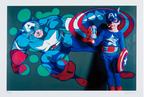
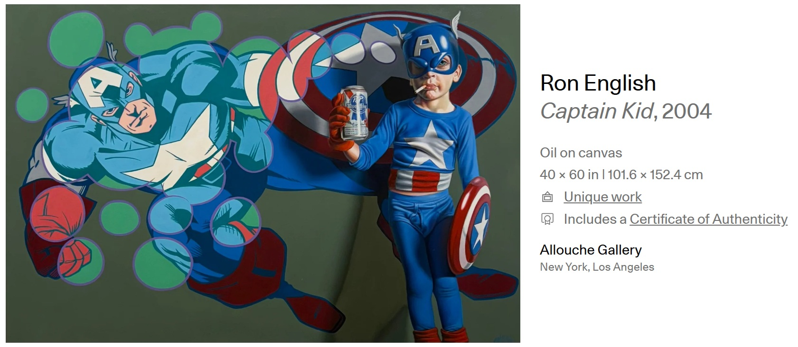

Literature
Ron English, Abject Expressionism: The Art of Ron English (San Francisco: Last Gasp, 2007), p. 150. ISBN 978-0867196894.

Ron English, Son of Pop: Ron English Paints His Progeny (San Francisco, California: 9mm Books and The Shooting Gallery, 2007), p. 79. ISBN 978-0-9766325-1-1.

Don Juan Francais, “Ron English Let's get drunk and kill god”. Concussion, 2009, p. 82.


“Ron English”, Carbon 14, no. 25. 2004.

Lifelounge Magazine, “Ron English - Art terrorist”. Lifelounge Magazine – The Counterfeit Edition, 2007.

Notes
This work appears on Artsy’s artwork page.
This composition appears in a related pair of digital prints in colors on wove paper listed on Artsy together with Hulk Boy. Each sheet measures 20 × 20 inches (50.8 × 50.8 cm), and the cited lot identifies the Captain Kid impression as edition 54/100. The listing notes that each print is signed and numbered in pencil along the lower edge.
Ancillary Documentation





Provenance
Private collection.